TOPOLOGICAL SPACES
TOPOLOGIES AND NEIGHBORHOODS
A topology is a family  of sets which satisfies the two conditions: the intersection of any two members of
of sets which satisfies the two conditions: the intersection of any two members of  is a member of
is a member of  , and the union of the members of each subfamily of
, and the union of the members of each subfamily of  is a member of
is a member of  . The set 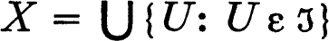 is necessarily a member of
. The set 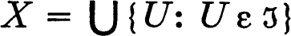 is necessarily a member of  because
because  is a subfamily of itself, and every member of
is a subfamily of itself, and every member of  is a subset of X. The set X is called the space of the topology
is a subset of X. The set X is called the space of the topology  and
and  is a topology for X. The pair
is a topology for X. The pair  is a topological space. When no confusion seems possible we may forget to mention the topology and write “X is a topological space.” We shall be explicit in cases where precision is necessary (for example if we are considering two different topologies for the same set X).
is a topological space. When no confusion seems possible we may forget to mention the topology and write “X is a topological space.” We shall be explicit in cases where precision is necessary (for example if we are considering two different topologies for the same set X).
The members of the topology  are called open relative to
are called open relative to  , or
, or  -open, or if only one topology is under consideration, simply open sets. The space X of the topology is always open, and the void set is always open because it is the union of the members of the void family. These may be the only open sets, for the family whose only members are X and the void set is a topology for X. This is not a very interesting topology, but it occurs frequently enough to deserve a name; it is called the indiscrete (or trivial) topology for X, and
-open, or if only one topology is under consideration, simply open sets. The space X of the topology is always open, and the void set is always open because it is the union of the members of the void family. These may be the only open sets, for the family whose only members are X and the void set is a topology for X. This is not a very interesting topology, but it occurs frequently enough to deserve a name; it is called the indiscrete (or trivial) topology for X, and  is then an indiscrete topological space. At the other extreme is the family of all subsets of X, which is the discrete topology for X (then
is then an indiscrete topological space. At the other extreme is the family of all subsets of X, which is the discrete topology for X (then  is a discrete topological space). If
is a discrete topological space). If  is the discrete topology, then every subset of the space is open.
is the discrete topology, then every subset of the space is open.
The discrete and the indiscrete topology for a set X are respectively the largest and the smallest topology for X. That is, every topology for X is contained in the discrete topology and contains the indiscrete topology. If  and
and  are topologies for X, then, following the convention for arbitrary families of sets,
are topologies for X, then, following the convention for arbitrary families of sets,  is smaller than
is smaller than  and
and  is larger than
is larger than  iff 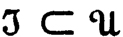. In other words,
iff 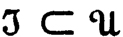. In other words,  is smaller than
is smaller than  iff each
iff each  -open set is
-open set is  -open. In this case it is also said that
-open. In this case it is also said that  is coarser than
is coarser than  and
and  is finer than
is finer than  . (Unfortunately, this situation is described in the literature by both of the statements:
. (Unfortunately, this situation is described in the literature by both of the statements:  is stronger than
is stronger than  and
and  is weaker than
is weaker than  .) If
.) If  and
and  are arbitrary topologies for X it may happen that
are arbitrary topologies for X it may happen that  is neither larger nor smaller than
is neither larger nor smaller than  ; in this case, following the usage for partial orderings, it is said that
; in this case, following the usage for partial orderings, it is said that  and
and  are not comparable.
are not comparable.
The set of real numbers, with an appropriate topology, is a very interesting topological space. This is scarcely surprising since the notion of a topological space is an abstraction of some interesting properties of the real numbers. The usual topology for the real numbers is the family of all those sets which contain an open interval about each of their points. That is, a subset A of the set of real numbers is open iff for each member x of A there are numbers a and b such that a < x < b and the open interval {y: a < y < b} is a subset of A. Of course, we must verify that this family of sets is indeed a topology, but this offers no difficulty. It is worth noticing that, conveniently, an open interval is an open set.
A set U in a topological space  is a neighborhood (
is a neighborhood ( -neighborhood) of a point x iff U contains an open set to which x belongs. A neighborhood of a point need not be an open set, but every open set is a neighborhood of each of its points. Each neighborhood of a point contains an open neighborhood of the point. If
-neighborhood) of a point x iff U contains an open set to which x belongs. A neighborhood of a point need not be an open set, but every open set is a neighborhood of each of its points. Each neighborhood of a point contains an open neighborhood of the point. If  is the indiscrete topology the only neighborhood of a point x is the space X itself. If
is the indiscrete topology the only neighborhood of a point x is the space X itself. If  is the discrete topology, then every set to which a point belongs is a neighborhood of it. If X is the set of real numbers and
is the discrete topology, then every set to which a point belongs is a neighborhood of it. If X is the set of real numbers and  is the usual topology, then a neighborhood of a point is a set containing an open interval to which the point belongs.
is the usual topology, then a neighborhood of a point is a set containing an open interval to which the point belongs.
1 THEOREM A set is open if and only if it contains a neighborhood of each of its points.
PROOF The union U of all open subsets of a set A is surely an open subset of A. If A contains a neighborhood of each of its points, then each member x of A belongs to some open subset of A and hence x ε U. In this case A = U and therefore A is open. On the other hand, if A is open it contains a neighborhood (namely, A) of each of its points. ∎
The foregoing theorem evidently implies that a set is open iff it is a neighborhood of each of its points.
The neighborhood system of a point is the family of all neighborhoods of the point.
2 THEOREM If  is the neighborhood system of a point, then finite intersections of members of
is the neighborhood system of a point, then finite intersections of members of  belong to
belong to  , and each set which contains a member of
, and each set which contains a member of  belongs to
belongs to  .
.
PROOF If U and V are neighborhoods of a point x, there are open neighborhoods U0 and V0 contained in U and V respectively. Then U ∩ V contains the open neighborhood U0 ∩ V0 and is hence a neighborhood of x. Thus the intersection of two (and hence of any finite number of) members of  is a member. If a set U contains a neighborhood of a point x it contains an open neighborhood of x and is consequently itself a neighborhood. ∎
is a member. If a set U contains a neighborhood of a point x it contains an open neighborhood of x and is consequently itself a neighborhood. ∎
3 Notes Fréchet [1] first considered abstract spaces. The concept of a topological space developed during the following years, accompanied by a good deal of experimentation with definitions and fundamental processes. Much of the development of the theory may be found in Hausdorff’s classic work [1] and, a little later, in the early volumes of Fundamenta Mathematicae There are actually two fundamental concepts which have grown out of these researches: that of a topological space and that of a uniform space (chapter 7). The latter notion, which has been formalized relatively recently (A. Weil [1]), owes much to the study of topological groups.
Standard references on general topology include:
Alexandroff and Hopf [1] (the first two chapters), Bourbaki [1], Fréchet [2], Kuratowski [1], Lefschetz [1] (the first chapter), R. L. Moore [1], Newman [1], Sierpinski [1], Tukey [1], Vaidyanathaswamy [1], and G. T. Whyburn [1].
A subset A of a topological space  is closed iff its relative complement X ~ A is open. The complement of the complement of the set A is again A, and hence a set is open iff its complement is closed. If
is closed iff its relative complement X ~ A is open. The complement of the complement of the set A is again A, and hence a set is open iff its complement is closed. If  is the indiscrete topology the complement of X and the complement of the void set are the only closed sets; that is, only the void set and X are closed. It is always true that the space and the void set are closed as well as open, and it may happen, as we have just seen, that these are the only closed sets. If
is the indiscrete topology the complement of X and the complement of the void set are the only closed sets; that is, only the void set and X are closed. It is always true that the space and the void set are closed as well as open, and it may happen, as we have just seen, that these are the only closed sets. If  is the discrete topology, then every subset is closed and open. If X is the set of real numbers and
is the discrete topology, then every subset is closed and open. If X is the set of real numbers and  the usual topology, then the situation is quite different. A closed interval (that is, a set of the form {x: a ≦ x ≦ b}) is fortunately closed. An open interval is not closed and a half-open interval (that is, a set of the form {x: a < x ≦ b) or {x: a ≦ x < b) where a < b) is neither open nor closed. Indeed—(problem 1.J)—the only sets which are both open and closed are the space and the void set.
the usual topology, then the situation is quite different. A closed interval (that is, a set of the form {x: a ≦ x ≦ b}) is fortunately closed. An open interval is not closed and a half-open interval (that is, a set of the form {x: a < x ≦ b) or {x: a ≦ x < b) where a < b) is neither open nor closed. Indeed—(problem 1.J)—the only sets which are both open and closed are the space and the void set.
According to the De Morgan formulae, 0.3, the union (intersection) of the complements of the members of a family of sets is the complement of the intersection (respectively union). Consequently, the union of a finite number of closed sets is necessarily closed and the intersection of the members of an arbitrary family of closed sets is closed. These properties characterize the family of closed sets, as the following theorem indicates. The simple proof is omitted.
4 THEOREM Let  be a family of sets such that the union of a finite subfamily is a member, the intersection of an arbitrary non-void subfamily is a member, and 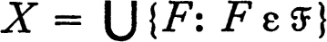 is a member. Then
be a family of sets such that the union of a finite subfamily is a member, the intersection of an arbitrary non-void subfamily is a member, and 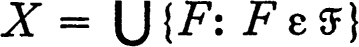 is a member. Then  is precisely the family of closed sets in X relative to the topology consisting of all complements of members of
is precisely the family of closed sets in X relative to the topology consisting of all complements of members of  .
.
ACCUMULATION POINTS
The topology of a topological space can be described in terms of neighborhoods of points and consequently it must be possible to formulate a description of closed sets in terms of neighborhoods. This formulation leads to a new classification of points in the following way. A set A is closed iff X ~ A is open, and hence iff each point of X ~ A has a neighborhood which is contained in X ~ A, or equivalently, is disjoint from A. Consequently, A is closed iff for each x, if every neighborhood of x intersects A, then x ε A. This suggests the following definition.
A point x is an accumulation point (sometimes called cluster point or limit point) of a subset A of a topological space  iff every neighborhood of x contains points of A other than x. Then it is true that each neighborhood of a point x intersects A if and only if x is either a point of A or an accumulation point of A. The following theorem is then clear.
iff every neighborhood of x contains points of A other than x. Then it is true that each neighborhood of a point x intersects A if and only if x is either a point of A or an accumulation point of A. The following theorem is then clear.
5 THEOREM A subset of a topological space is closed if and only if it contains the set of its accumulation points.
If x is an accumulation point of A it is sometimes said, in a pleasantly suggestive phrase, that there are points of A arbitrarily near x. If we pursue this imagery it appears that an indiscrete topological space is really quite crowded, for each point x is an accumulation point of every set other than the void set and the set {x}. On the other hand, in a discrete topological space, no point is an accumulation point of a set. If X is the set of real numbers with the usual topology a variety of situations can arise. If A is the open interval (0,1), then every point of the closed interval [0,1] is an accumulation point of A. If A is the set of all non-negative rationals with squares less than 2, then the closed interval [0,√2] is the set of accumulation points. If A is the set of all reciprocals of integers, then 0 is the only accumulation point of A, and the set of integers has no accumulation points.
6 THEOREM The union of a set and the set of its accumulation points is closed.
PROOF If x is neither a point nor accumulation point of A, then there is an open neighborhood U of x which does not intersect A. Since U is a neighborhood of each of its points, no one of these is an accumulation point of A. Hence the union of the set A and the set of its accumulation points is the complement of an open set. ∎
The set of all accumulation points of a set A is sometimes called the derived set of A.
CLOSURE
The closure ( -closure) of a subset A of a topological space
-closure) of a subset A of a topological space  is the intersection of the members of the family of all closed sets containing A. The closure of A is denoted by A–, or by Ā. The set A– is always closed because it is the intersection of closed sets, and evidently A– is contained in each closed set which contains A. Consequently A– is the smallest closed set containing A and it follows that A is closed if and only if A = A–. The next theorem describes the closure of a set in terms of its accumulation points.
is the intersection of the members of the family of all closed sets containing A. The closure of A is denoted by A–, or by Ā. The set A– is always closed because it is the intersection of closed sets, and evidently A– is contained in each closed set which contains A. Consequently A– is the smallest closed set containing A and it follows that A is closed if and only if A = A–. The next theorem describes the closure of a set in terms of its accumulation points.
7 THEOREM The closure of any set is the union of the set and the set of its accumulation points.
PROOF Every accumulation point of a set A is an accumulation point of each set containing A, and is therefore a member of each closed set containing A. Hence A– contains A and all accumulation points of A. On the other hand, according to the preceding theorem, the set consisting of A and its accumulation points is closed and it therefore contains A–. ∎
The function which assigns to each subset A of a topological space the value A– might be called the closure function, or closure operator, relative to the topology. This operator determines the topology completely, for a set A is closed iff A = A–. In other words, the closed sets are simply the sets which are fixed under the closure operator. It is instructive to enquire: Under what circumstances is an operator which is defined for all subsets of a fixed set X the closure operator relative to some topology for X? It turns out that four very simple properties serve to describe closure. First, because the void set is closed, the closure of the void set is void; and, second, each set is contained in its closure. Next, because the closure of each set is closed, the closure of the closure of a set is identical with the closure of the set (in the usual algebraic terminology, the closure operator is idempotent). Finally, the closure of the union of two sets is the union of the closures, for (A ∪ B)– is always a closed set containing A and B, and therefore contains A– and B– and hence A– ∪ B–; on the other hand, A– ∪ B– is a closed set containing A ∪ B and hence also (A ∪ B)–.
A closure operator on X is an operator which assigns to each subset A of X a subset Ac of X such that the following four statements, the Kuratowski closure axioms, are true.
(a)If 0 is the void set, 0c = 0.
(b)For each A, A ⊂ Ac.
(c)For each A, Acc = Ac.
(d)For each A and B, (A ∪ B)c = Ac ∪ Bc.
The following theorem of Kuratowski shows that these four statements are actually characteristic of closure. The topology defined below is the topology associated with a closure operator.
8 THEOREM Let c be a closure operator on X, let  be the family of all subsets A of X for which Ac = A, and let
be the family of all subsets A of X for which Ac = A, and let  be the family of complements of members of
be the family of complements of members of  . Then
. Then  is a topology for X, and Ac is the
is a topology for X, and Ac is the  -closure of A for each subset A of X.
-closure of A for each subset A of X.
PROOF Axiom (a) shows that the void set belongs to  , and (d) shows that the union of two members of
, and (d) shows that the union of two members of  is a member of
is a member of  . Consequently the union of any finite subfamily (void or not) of
. Consequently the union of any finite subfamily (void or not) of  is a member of
is a member of  . Because of (b), X ⊂ Xc, so that X = Xc, and the union of the members of
. Because of (b), X ⊂ Xc, so that X = Xc, and the union of the members of  is then X. In view of theorem 1.4, it will follow that
is then X. In view of theorem 1.4, it will follow that  is a topology for X if it is shown that the intersection of the members of any non-void subfamily of
is a topology for X if it is shown that the intersection of the members of any non-void subfamily of  is a member of
is a member of  . To this end, first observe that, if B ⊂ A, then Bc ⊂ Ac, because Ac = [(A ~ B) ∪ B]c = (A ~ B)c ∪ Bc. Now suppose that
. To this end, first observe that, if B ⊂ A, then Bc ⊂ Ac, because Ac = [(A ~ B) ∪ B]c = (A ~ B)c ∪ Bc. Now suppose that  is a non-void subfamily of
is a non-void subfamily of  and that B = 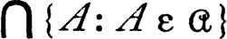. The set B is contained in each member of
and that B = 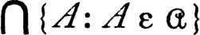. The set B is contained in each member of  , and therefore 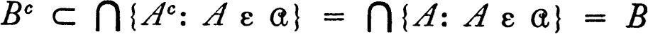. Since B ⊂ Bc it follows that B = Bc and 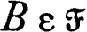. This shows that
, and therefore 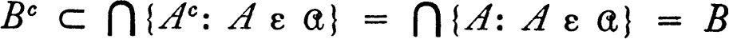. Since B ⊂ Bc it follows that B = Bc and 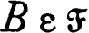. This shows that  is a topology, and it remains to show that Ac is A–,the
is a topology, and it remains to show that Ac is A–,the  -closure of A. By definition, A– is the intersection of all the
-closure of A. By definition, A– is the intersection of all the  -closed sets, that is, the members of
-closed sets, that is, the members of  , which contain A. By axiom (c), 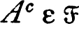, and hence A– ⊂ Ac; since 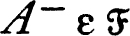 and A– ⊃ A it follows that A– ⊃ Ac and hence A~ = Ac. ∎
, which contain A. By axiom (c), 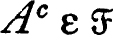, and hence A– ⊂ Ac; since 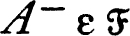 and A– ⊃ A it follows that A– ⊃ Ac and hence A~ = Ac. ∎
There is another operator defined on the family of all subsets of a topological space, which is very intimately related to the closure operator. A point x of a subset A of a topological space is an interior point of A iff A is a neighborhood of x, and the set of all interior points of A is the interior of A, denoted A0. (In the usual terminology, the relation “is an interior point of” is the inverse of the relation “is a neighborhood of.”) It is convenient to exhibit the connection between this notion and the earlier concepts before considering examples.
9 THEOREM Let A be a subset of a topological space X. Then the interior A0 of A is open and is the largest open subset of A, A set A is open if and only if A = A0. The set of all points of A which are not points of accumulation of X ~ A is precisely A0. The closure of X ~ A is X ~ A0.
PROOF If a point x belongs to the interior of a set A, then x is a member of some open subset U of A. Every member of U is also a member of A0, and consequently A0 contains a neighborhood of each of its points and is therefore open. If V is an open subset of A and y ε V, then A is a neighborhood of y and so y ε A0. Hence A0 contains each open subset of A and it is therefore the largest open subset of A. If A is open, then A is surely identical with the largest open subset of A ; hence A is open iff A = A0. If x is a point of A which is not an accumulation point of X ~ A, then there is a neighborhood U of x which does not intersect X ~ A and is therefore a subset of A. Then A is a neighborhood of x and x ε A0. On the other hand, A0 is a neighborhood of each of its points and A0 does not intersect X ~ A, so that no point of A0 is an accumulation point of X ~ A. Finally, since A0 consists of the points of A which are not accumulation points of X ~ A, the complement, X ~ A0, is precisely the set of all points which are either points of X ~ A or accumulation points of X ~ A; that is, the complement is the closure (X ~ A)–. ∎
The last statement of the foregoing theorem deserves a little further consideration. For convenience, let us denote the relative complement X ~ A by A′. Then A″, the complement of the complement of A, is again A (we sometimes say ′ is an operator of period two). The preceding result can then be stated as A0′ = A′–, and, it follows, taking complements, that A0 = A′–′. Thus the interior of A is the complement of the closure of the complement of A. If A is replaced by its complement it follows that A– = A′0′, so that the closure of a set is the complement of the interior of the complement.*
If X is an indiscrete space the interior of every set except X itself is void. If X is a discrete space, then each set is open and closed and consequently identical with its interior and with its closure. If X is the set of real numbers with the usual topology, then the interior of the set of all integers is void; the interior of a closed interval is the open interval with the same endpoints. The interior of the set of rational numbers is void, and the closure of the interior of this set is consequently void. The closure of the set of rational numbers is the set X of all numbers, and the interior of this set is X again. Thus the interior of the closure of a set may be quite different from the closure of the interior; that is, the interior operator and the closure operator do not generally commute.
There is one other operator which occurs frequently enough to justify its definition. The boundary of a subset A of a topological space X is the set of all points x which are interior to neither A nor X ~ A. Equivalently, x is a point of the boundary iff each neighborhood of x intersects both A and X ~ A. It is clear that the boundary of A is identical with the boundary of X ~ A. If X is indiscrete and A is neither X nor void, then the boundary of A is X, while if X is discrete the boundary of every subset is void. The boundary of an interval of real numbers, in the usual topology for the reals, is the set whose only members are the endpoints of the interval, regardless of whether the interval is open, closed, or half-open. The boundary of the set of rationals, or the set of irrationals, is the set of all real numbers.
It is not difficult to discover the relations between boundary, closure, and interior. The following theorem, whose proof we omit, summarizes the facts.
10 THEOREM Let A be a subset of a topological space X and let b(A) be the boundary of A. Then b(A) = A– ∩ (X ~ A)~ = A– ~A0, X ~ b(A) = A0 ∪ (X ~ A)0, A– = A ∪ b(A) and A0 = A ~b(A).
A set is closed if and only if it contains its boundary and is open if and only if it is disjoint from its boundary.
BASES AND SUBBASES
In defining the usual topology for the set of real numbers we began with the family  of open intervals, and from this family constructed the topology
of open intervals, and from this family constructed the topology  . The same method is useful in other situations and we now examine the construction in detail. A family
. The same method is useful in other situations and we now examine the construction in detail. A family  of sets is a base for a topology
of sets is a base for a topology  iff
iff  is a subfamily of
is a subfamily of  and for each point x of the space, and each neighborhood U of X, there is a member V of
and for each point x of the space, and each neighborhood U of X, there is a member V of  such that x ε V ⊂ U. Thus the family of open intervals is a base for the usual topology of the real numbers, in view of the definition of the usual topology and the fact that open intervals are open relative to this topology.
such that x ε V ⊂ U. Thus the family of open intervals is a base for the usual topology of the real numbers, in view of the definition of the usual topology and the fact that open intervals are open relative to this topology.
There is a simple characterization of bases which is frequently used as a definition: A subfamily  of a topology
of a topology  is a base for
is a base for  iff each member of
iff each member of  is the union of members of
is the union of members of  . To prove this fact, suppose that
. To prove this fact, suppose that  is a base for the topology
is a base for the topology  and that U ε
and that U ε  . Let V be the union of all members of
. Let V be the union of all members of  which are subsets of U and suppose that x ε U. Then there is W in
which are subsets of U and suppose that x ε U. Then there is W in  such that x ε W ⊂ U, and consequently x ε V. Hence U ⊂ V and since V is surely a subset of U, V = U. To show the converse, suppose 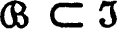 and each member of
such that x ε W ⊂ U, and consequently x ε V. Hence U ⊂ V and since V is surely a subset of U, V = U. To show the converse, suppose 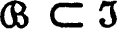 and each member of  is the union of members of
is the union of members of  . If U ε
. If U ε  , then U is the union of the members of a subfamily of
, then U is the union of the members of a subfamily of  , and for each x in U there is V in
, and for each x in U there is V in  such that x ε V ⊂ U. Consequently
such that x ε V ⊂ U. Consequently  is a base for
is a base for  .
.
Although this is a very convenient method for the construction of topologies, a little caution is necessary because not every family of sets is the base for a topology. For example, let X consist of the integers 0, 1, and 2, let A consist of 0 and 1, and let B consist of 1 and 2. If  is the family whose members are X, A, B and the void set, then
is the family whose members are X, A, B and the void set, then  cannot be the base for a topology because: by direct computation, the union of members of
cannot be the base for a topology because: by direct computation, the union of members of  is always a member, so that if
is always a member, so that if  were the base of a topology that topology would have to be
were the base of a topology that topology would have to be  itself, but
itself, but  is not a topology because 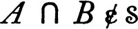. The reason for this situation is made clear by the following theorem.
is not a topology because 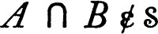. The reason for this situation is made clear by the following theorem.
11 THEOREM A family  of sets is a base for some topology for the set 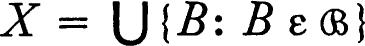 if and only if for every two members U and V of
of sets is a base for some topology for the set 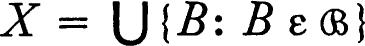 if and only if for every two members U and V of  and each point x in U ∩ V there is W in
and each point x in U ∩ V there is W in  such that x ε W and W ⊂ U ∩ V.
such that x ε W and W ⊂ U ∩ V.
PROOF If  is a base for some topology, U and V are members of
is a base for some topology, U and V are members of  and x ε U ∩ V then, since U ∩ V is open, there is a member of
and x ε U ∩ V then, since U ∩ V is open, there is a member of  to which x belongs and which is a subset of U ∩ V. To show the converse, let
to which x belongs and which is a subset of U ∩ V. To show the converse, let  be a family with the specified property and let
be a family with the specified property and let  be the family of all unions of members of
be the family of all unions of members of  . A union of members of
. A union of members of  is itself a union of members of
is itself a union of members of  and is therefore a member of
and is therefore a member of  , and it is only necessary to show that the intersection of two members U and V of
, and it is only necessary to show that the intersection of two members U and V of  is a member of
is a member of  . If x ε U ∩ V, then we may choose U′ and V′ in
. If x ε U ∩ V, then we may choose U′ and V′ in  such that x ε U′ ⊂ U and x ε V′ ⊂ V, and then a member W of
such that x ε U′ ⊂ U and x ε V′ ⊂ V, and then a member W of  such that x ε U′ ⊂ U and ∩ ∪′ ∩ V′ ⊂ U ∩ V. Consequently U ∩ V is the union of members of
such that x ε U′ ⊂ U and ∩ ∪′ ∩ V′ ⊂ U ∩ V. Consequently U ∩ V is the union of members of  , and
, and  is a topology. ∎
is a topology. ∎
We have just seen that an arbitrary family  of sets may fail to be the base for any topology. With admirable persistence we vary the question and enquire whether there is a unique topology which is, in some sense, generated by
of sets may fail to be the base for any topology. With admirable persistence we vary the question and enquire whether there is a unique topology which is, in some sense, generated by  . Such a topology should be a topology for the set X which is the union of the members of
. Such a topology should be a topology for the set X which is the union of the members of  , and each member of
, and each member of  should be open relative to the topology; that is,
should be open relative to the topology; that is,  should be a subfamily of the topology. This raises the question: Is there a smallest topology for X which contains
should be a subfamily of the topology. This raises the question: Is there a smallest topology for X which contains  ? The following simple result will enable us to exhibit this smallest topology,
? The following simple result will enable us to exhibit this smallest topology,
12 THEOREM If  is any non-void family of sets the family of all finite intersections of members of S is the base for a topology for the set 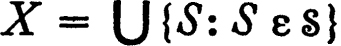.
is any non-void family of sets the family of all finite intersections of members of S is the base for a topology for the set 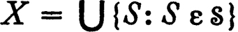.
PROOF If  is a family of sets let
is a family of sets let  be the family of finite intersections of members of
be the family of finite intersections of members of  . Then the intersection of two members of
. Then the intersection of two members of  is again a member of
is again a member of  and, applying the preceding theorem,
and, applying the preceding theorem,  is the base for a topology. ∎
is the base for a topology. ∎
A family  of sets is a subbase for a topology
of sets is a subbase for a topology  iff the family of finite intersections of members of
iff the family of finite intersections of members of  is a base for
is a base for  (equivalently, iff each member of
(equivalently, iff each member of  is the union of finite intersections of members of
is the union of finite intersections of members of  ). In view of the preceding theorem every non-empty family
). In view of the preceding theorem every non-empty family  is the subbase for some topology, and this topology is, of course, uniquely determined by
is the subbase for some topology, and this topology is, of course, uniquely determined by  . It is the smallest topology containing
. It is the smallest topology containing  (that is, it is a topology containing
(that is, it is a topology containing  and is a subfamily of every topology containing
and is a subfamily of every topology containing  ).
).
There will generally be many different bases and subbases for a topology and the most appropriate choice may depend on the problem under consideration. One rather natural subbase for the usual topology for the real numbers is the family of half-infinite open intervals; that is, the family of sets of the form {x: x > a} or {x: x < a}. Each open interval is the intersection of two such sets, and this family is consequently a subbase. The family of all sets of the same form with a rational is a less obvious and more interesting subbase. (See problem 1.J.)
A space whose topology has a countable base has many pleasant properties. Such spaces are said to satisfy the second axiom of countability. (The terms separable and perfectly separable are also used in this connection, but we shall use neither.)
13 THEOREM If A is an uncountable subset of a space whose topology has a countable base, then some point of A is an accumulation point of A.
PROOF Suppose that no point of A is an accumulation point and that  is a countable base. For each x in A there is an open set containing no point of A other than x, and since
is a countable base. For each x in A there is an open set containing no point of A other than x, and since  is a base we may choose Bx in
is a base we may choose Bx in  such that Bx ∩ A = {x}. There is then a one-to-one correspondence between the points of A and the members of a subfamily of
such that Bx ∩ A = {x}. There is then a one-to-one correspondence between the points of A and the members of a subfamily of  , and A is therefore countable. ∎
, and A is therefore countable. ∎
A sharper form of this theorem is stated in problem 1.H.
A set A is dense in a topological space X iff the closure of A is X. A topological space X is separable iff there is a countable subset which is dense in X. A separable space may fail to satisfy the second axiom of countability. For example, let X be an uncountable set with the topology consisting of the void set and the complements of finite sets. Then every non-finite set is dense because it intersects every non-void open set. On the other hand, suppose that there is a countable base  and let x be a fixed point of X. The intersection of the family of all open sets to which x belongs must be {x}, because the complement of every other point is open. It follows that the intersection of those members of the base
and let x be a fixed point of X. The intersection of the family of all open sets to which x belongs must be {x}, because the complement of every other point is open. It follows that the intersection of those members of the base  to which x belongs is {x}. But the complement of this countable intersection is the union of a countable number of finite sets, hence countable, and this is a contradiction. (Less trivial examples occur later.) There is no difficulty in showing that a space with a countable base is separable.
to which x belongs is {x}. But the complement of this countable intersection is the union of a countable number of finite sets, hence countable, and this is a contradiction. (Less trivial examples occur later.) There is no difficulty in showing that a space with a countable base is separable.
14 THEOREM A space whose topology has a countable base is separable.
PROOF Choose a point out of each member of the base, thus obtaining a countable set A. The complement of the closure of A is an open set which, being disjoint from A, contains no non-void member of the base and is hence void. ∎
A family  is a cover of a set B iff B is a subset of the union 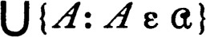; that is, iff each member of B belongs to some member of
is a cover of a set B iff B is a subset of the union 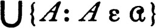; that is, iff each member of B belongs to some member of  . The family is an open cover of B iff each member of
. The family is an open cover of B iff each member of  is an open set. A subcover of
is an open set. A subcover of  is a subfamily which is also a cover.
is a subfamily which is also a cover.
15 THEOREM (LINDELÖF) There is a countable subcover of each open cover of a subset of a space whose topology has a countable base.
PROOF Suppose A is a set,  is an open cover of A, and
is an open cover of A, and  is a countable base for the topology. Because each member of
is a countable base for the topology. Because each member of  is the union of members of
is the union of members of  there is a subfamily
there is a subfamily  of
of  which also covers A, such that each member of
which also covers A, such that each member of  is a subset of some member of
is a subset of some member of  . For each member of
. For each member of  we may select a containing
member of
we may select a containing
member of  and so obtain a countable subfamily
and so obtain a countable subfamily  of
of  . Then
. Then  is also a cover of A because
is also a cover of A because  covers A. Hence
covers A. Hence  has a countable subcover. ∎
has a countable subcover. ∎
A topological space is a Lindelöf space iff each open cover of the space has a countable subcover.
Since the second axiom of countability has been mentioned, it seems only proper that the first be stated. This axiom concerns a localized form of the notion of a base. A base for the neighborhood system of a point x, or a local base at x, is a family of neighborhoods of x such that every neighborhood of x contains a member of the family. For example, the family of open neighborhoods of a point is always a base for the neighborhood system. A topological space satisfies the first axiom of countability if the neighborhood system of every point has a countable base. It is clear that each topological space which satisfies the second axiom of countability also satisfies the first; on the other hand, any uncountable discrete topological space satisfies the first axiom (there is a base for the neighborhood system of each point x which consists of the single neighborhood {x}) but not the second (the cover whose members are {x} for all x in X has no countable subcover). The second axiom of countability is therefore definitely more restrictive than the first.
It is worth noticing that, if U1, U2, …, Un, … is a countable local base at x, then a new local base V1, V2, …, Vn, … can be found such that Vn ⊃ Vn+1 for each n. The construction is simple: let Vn = ∩ {Uk: k ≦ n}.
A subbase for the neighborhood system of a point x, or a local subbase at x, is a family of sets such that the family of all finite intersections of members is a local base. If U1, U2, …, Un, … is a countable local subbase, then V1, V2, …, Vn, …, where Vn = ∩ {Uk: k ≦ n} is a countable local base. Hence the existence of a countable local subbase at each point implies the first axiom of countability.
RELATIVIZATION; SEPARATION
If  is a topological space and Y is a subset of X we may construct a topology
is a topological space and Y is a subset of X we may construct a topology  for Y which is called the relative topology, or the relativization of
for Y which is called the relative topology, or the relativization of  to Y. The relative topology
to Y. The relative topology  is defined to be the family of all intersections of members of
is defined to be the family of all intersections of members of  with Y; that is, U belongs to the relative topology
with Y; that is, U belongs to the relative topology  iff U = V ∩ Y for some
iff U = V ∩ Y for some  -open set V. It is not difficult to see that
-open set V. It is not difficult to see that  is actually a topology. Each member U of the relative topology
is actually a topology. Each member U of the relative topology  is said to be open in Y, and its relative complement Y ~ U is closed in Y. The
is said to be open in Y, and its relative complement Y ~ U is closed in Y. The  -closure of a subset of Y is its closure in Y. Each subset Y of X is both open and closed in itself, although Y may be neither open nor closed in X. The topological space
-closure of a subset of Y is its closure in Y. Each subset Y of X is both open and closed in itself, although Y may be neither open nor closed in X. The topological space  is called a subspace of the space
is called a subspace of the space  . More formally, an arbitrary topological space
. More formally, an arbitrary topological space  is a sub-space of another space
is a sub-space of another space  iff Y ⊂ X and
iff Y ⊂ X and  is the relativization of
is the relativization of  .
.
It is worth noticing that, if  is a subspace of
is a subspace of  and 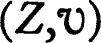 is a subspace of
and 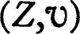 is a subspace of  , then is a subspace of
, then is a subspace of  . This transitivity relation will often be used without explicit mention.
. This transitivity relation will often be used without explicit mention.
Suppose that  is a subspace of
is a subspace of  and that A is a subset of Y. Then A may be either
and that A is a subset of Y. Then A may be either  -closed or
-closed or  -closed, a point y may be either a
-closed, a point y may be either a  or a
or a  -accumulation point of A, and A has both a
-accumulation point of A, and A has both a  and a
and a  -closure. The relations between these various notions are important.
-closure. The relations between these various notions are important.
16 THEOREM Let  be a topological space, let
be a topological space, let  be a sub-space, and let A be a subset of Y. Then:
be a sub-space, and let A be a subset of Y. Then:
(a)The set A is  -closed if and only if it is the intersection of Y and a
-closed if and only if it is the intersection of Y and a  -closed set.
-closed set.
(b)A point y of Y is a  -accumulation point of A if and only if it is a
-accumulation point of A if and only if it is a  -accumulation point.
-accumulation point.
(c)The  -closure of A is the intersection of Y and the
-closure of A is the intersection of Y and the  -closure of A.
-closure of A.
PROOF The set A is closed in Y iff its relative complement Y ~ A is of the form V ∩ Y for some  -open set V, but this is true iff A = (X ~ V) ∩ Y for some V in
-open set V, but this is true iff A = (X ~ V) ∩ Y for some V in  . This proves (a), and (b) follows directly from the definition of the relative topology and the definition of accumulation point. The
. This proves (a), and (b) follows directly from the definition of the relative topology and the definition of accumulation point. The  -closure of A is the union of A and the set of its
-closure of A is the union of A and the set of its  -accumulation points, and hence by (b) it is the intersection of Y and the
-accumulation points, and hence by (b) it is the intersection of Y and the  -closure of A. ∎
-closure of A. ∎
If  is a subspace of
is a subspace of  and Y is open in X, then each set open in Y is also open in X because it is the intersection of an open set and Y. A similar statement, with “closed” replacing “open” everywhere, is also true. However, knowing that a set is open or closed in a subspace generally tells very little about the situation of the set in X. If X is the union of two sets Y and Z and if A is a subset of X such that A ∩ Y is open in Y and A ∩ Z is open in Z, then one might hope that A is open in X. But this is not always true, for if Y is an arbitrary subset of X and Z = X ~ Y, then Y ∩ Y and Y ∩ Z are open in Y and Z respectively. There is one important case, in which this result does hold. Two subsets A and B are separated in a topological space X iff A– ∩ B and A ∩ B– are both void. This definition of separation involves the closure operation in X. However, the apparent dependence on the space X is illusory, for A and B are separated in X if and only if neither A nor B contains a point or an accumulation point of the other. This condition may be restated in terms of the relative topology for A ∪ B, in view of part (b) of the foregoing theorem, as: both A and B are closed in A ∪ B (or equivalently A (or B) is both open and closed in A ∪ B) and A and B are disjoint. As an example, notice that the open intervals (0,1) and (1,2) are separated subsets of the real numbers with the usual topology and that there is a point, 1, belonging to the closure of both. However, (0,1) is not separated from the closed interval [1,2] because 1, which is a member of [1,2], is an accumulation point of (0,1).
and Y is open in X, then each set open in Y is also open in X because it is the intersection of an open set and Y. A similar statement, with “closed” replacing “open” everywhere, is also true. However, knowing that a set is open or closed in a subspace generally tells very little about the situation of the set in X. If X is the union of two sets Y and Z and if A is a subset of X such that A ∩ Y is open in Y and A ∩ Z is open in Z, then one might hope that A is open in X. But this is not always true, for if Y is an arbitrary subset of X and Z = X ~ Y, then Y ∩ Y and Y ∩ Z are open in Y and Z respectively. There is one important case, in which this result does hold. Two subsets A and B are separated in a topological space X iff A– ∩ B and A ∩ B– are both void. This definition of separation involves the closure operation in X. However, the apparent dependence on the space X is illusory, for A and B are separated in X if and only if neither A nor B contains a point or an accumulation point of the other. This condition may be restated in terms of the relative topology for A ∪ B, in view of part (b) of the foregoing theorem, as: both A and B are closed in A ∪ B (or equivalently A (or B) is both open and closed in A ∪ B) and A and B are disjoint. As an example, notice that the open intervals (0,1) and (1,2) are separated subsets of the real numbers with the usual topology and that there is a point, 1, belonging to the closure of both. However, (0,1) is not separated from the closed interval [1,2] because 1, which is a member of [1,2], is an accumulation point of (0,1).
Three theorems on separation will be needed in the sequel.
17 THEOREM If Y and Z are subsets of a topological space X and both Y and Z are closed or both are open, then Y ~ Z is separated from Z ~Y.
PROOF Suppose that Y and Z are closed subsets of X. Then Y and Z are closed in Y ∪ Z and therefore Y ~ Z = ((Y ∪ Z) ~ Z) and Z ~ Y are open in Y ∪ Z. It follows that both Y ~ Z and Z ~Y are open in (Y ~ Z) ∪ (Z ~ Y), and since they are complements relative to this set both are closed in (Y ~ Z) ∪ (Z ~Y). Consequently Y ~ Z and Z ~Y are separated. A dual argument applies to the case where both Y and Z are open in X. ∎
18 THEOREM Let X be a topological space which is the union of subsets Y and Z such that Y ~ Z and Z ~Y are separated. Then the closure of a subset A of X is the union of the closure in Y of A ∩ Y and the closure in Z of A ∩ Z.
PROOF The closure of a union of two sets is the union of the closures and hence A– = (A ∩ Y)– ∪ (A ∩ Z ~ Y)–. Consequently A– ∩ Y = [(A ∩ Y)– ∩ Y] ∪ [A ∩ Z ~ Y)– ∩ Y]. The set (Z ~ Y)– is disjoint from Y ~ Z, hence (Z ~ Y)– ⊂ Z, and it follows that (A ∩ Z ~ Y)– is a subset of (A ∩ Z)– ∩ Z. Similarly A– ∩ Z is the union of {A ∩ Z)– ∩ Z and a subset of (A ∩ Y)– ∩ Y. Consequently A– = (A– ∩ Y) ∪ (A– ∩ Z) = [(A ∩ Y)– ∩ Y] ∪ [(A ∩ Z)– ∩ Z], and the theorem is proved. ∎
19 COROLLARY Let X be a topological space which is the union of subsets Y and Z such that Y ~ Z and Z ~Y are separated. Then a subset A of X is closed (open) if A ∩ Y is closed (open) in Y and A ∩ Z is closed (open) in Z.
PROOF If A ∩ Y and A ∩ Z are closed in Y and Z respectively, then, by the preceding theorem, A is necessarily identical with its closure and is therefore closed. If A ∩ Y and A ∩ Z are open in Y and Z respectively, then Y ∩ X ~ A and Z ∩ X ~ A are closed in Y and in Z and hence X ~ A is closed and A is open. ∎
CONNECTED SETS
A topological space  is connected iff X is not the union of two non-void separated subsets. A subset Y of X is connected iff the topological space Y with the relative topology is connected. Equivalently, Y is connected iff Y is not the union of two non-void separated subsets. Another equivalence follows from the discussion of separation: A set Y is connected iff the only subsets of Y which are both open and closed in Y are Y and the void set. From this form it follows at once that any indiscrete space is connected. A discrete space containing more than one point is not connected. The real numbers, with the usual topology, are connected (problem 1.J), but the rationals, with the usual topology of the reals relativized, are not connected. (For any irrational a the sets {x: x < a} and {x: x > a} are separated.)
is connected iff X is not the union of two non-void separated subsets. A subset Y of X is connected iff the topological space Y with the relative topology is connected. Equivalently, Y is connected iff Y is not the union of two non-void separated subsets. Another equivalence follows from the discussion of separation: A set Y is connected iff the only subsets of Y which are both open and closed in Y are Y and the void set. From this form it follows at once that any indiscrete space is connected. A discrete space containing more than one point is not connected. The real numbers, with the usual topology, are connected (problem 1.J), but the rationals, with the usual topology of the reals relativized, are not connected. (For any irrational a the sets {x: x < a} and {x: x > a} are separated.)
20 THEOREM The closure of a connected set is connected.
PROOF Suppose that Y is a connected subset of a topological space and that Y– = A ∪ B, where A and B are both open and closed in Y–. Then each of A ∩ Y and B ∩ Y is open and closed in Y, and since Y is connected, one of these two sets must be void. Suppose that B ∩ Y is void. Then Y is a subset of A and consequently Y– is a subset of A because A is closed in Y–. Hence B is void, and it follows that Y– is connected. ∎
There is another version of this theorem which is apparently stronger, which states that, if Y is a connected subset of X and if Z is a set such that Y ⊂ Z ⊂ Y–, then Z is connected. However, the stronger form is an immediate consequence of applying the foregoing theorem to Z with the relative topology.
21 THEOREM Let  be a family of connected subsets of a topological space. If no two members of
be a family of connected subsets of a topological space. If no two members of  are separated, then is connected.
are separated, then is connected.
PROOF Let C be the union of the members of  and suppose that D is both open and closed in C. Then for each member A of
and suppose that D is both open and closed in C. Then for each member A of  , A ∩ D is open and closed in A, and since A is connected either A ⊂ D or A ⊂ C ~ D. Now if A and B are members of
, A ∩ D is open and closed in A, and since A is connected either A ⊂ D or A ⊂ C ~ D. Now if A and B are members of  it is impossible that A ⊂ D and B ⊂ C ~ D, for in this case A and B, being respectively subsets of the separated sets D and C ~ D, would be separated. Consequently either every member of a is a subset of C ~ D and D is void, or every member of a is a subset of D and C ~ D is void. ∎
it is impossible that A ⊂ D and B ⊂ C ~ D, for in this case A and B, being respectively subsets of the separated sets D and C ~ D, would be separated. Consequently either every member of a is a subset of C ~ D and D is void, or every member of a is a subset of D and C ~ D is void. ∎
A component of a topological space is a maximal connected subset; that is, a connected subset which is properly contained in no other connected subset. A component of a subset A is a component of A with the relative topology; that is, a maximal connected subset of A. If a space is connected, then it is its only component. If a space is discrete, then each component consists of a single point. Of course, there are many spaces which are not discrete which have components consisting of a single point—for example, the space of rational numbers, with the (relativized) usual topology.
22 THEOREM Each connected subset of a topological space is contained in a component, and each component is closed. If A and B are distinct components of a space, then A and B are separated.
PROOF Let A be a non-void connected subset of a topological space and let C be the union of all connected sets containing A. In view of the preceding theorem, C is surely connected, and if D is a connected set and contains C, then, since D ⊂ C, it follows that C = D. Hence C is a component. (If A is void, and the space is not, a set consisting of a single point is contained in a component, and hence so is A.) Each component C is connected and hence, by 1.20, the closure C– is connected. Therefore C is identical with C– and C is closed. If A and B are distinct components and are not separated, then their union is connected, by 1.21, which is a contradiction. ∎
It is well to end our remarks on components with a word of caution. If two points, x and y, belong to the same component of a topological space, then they always lie in the same half of a separation of the space. That is, if the space is the union of separated sets A and B, then both x and y belong to A or both x and y belong to B. The converse of this proposition is false. It may happen that two points always lie in the same half of a separation but nevertheless lie in different components. (See problem 1.P.)
PROBLEMS
A LARGEST AND SMALLEST TOPOLOGIES
(a) The intersection of any collection of topologies for X is a topology for X.
(b) The union of two topologies for X may not be a topology for X (unless X consists of at most two points).
(c) For any collection of topologies for X there is a unique largest topology which is smaller than each member of the collection, and a unique smallest topology which is larger than each member of the collection.
B TOPOLOGIES FROM NEIGHBORHOOD SYSTEMS
(a)
Let  be a topological space and for each x in X let 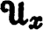 be the family of all neighborhoods of x. Then:
be a topological space and for each x in X let 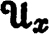 be the family of all neighborhoods of x. Then:
(i) |
If 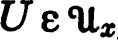, then x ε U. |
(ii) |
If U and V are members of , then 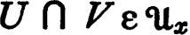. |
(iii) |
If and U ⊂ F, then 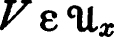. |
(iv) |
If , then there is a member V of such that V ⊂ U and 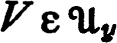 for each y in V (that is, V is a neighborhood of each of its points). |
(b) If  is a function which assigns to each x in X a non-void family satisfying (i), (ii), and (iii), then the family
is a function which assigns to each x in X a non-void family satisfying (i), (ii), and (iii), then the family  of all sets U, such that whenever x ε U, is a topology for X If (iv) is also satisfied, then is precisely the neighborhood system of x relative to the topology
of all sets U, such that whenever x ε U, is a topology for X If (iv) is also satisfied, then is precisely the neighborhood system of x relative to the topology  .
.
Note Various methods of describing a topological space have been investigated intensively. Kuratowski’s three closure axioms may be replaced by a single condition, as shown by Monteiro [1] and by Iseki [1]. It is also possible to use the notion of separation as a primitive (Wallace [1], Krishna Murti [1] and Szymanski [1]); the notion of derived set may also be used as primitive (for information and references see Monteiro [2] and Ribeiro [3]). The relation between various operations has been studied by Stopher [1],
C TOPOLOGIES FROM INTERIOR OPERATORS
If i is an operator which carries subsets of X into subsets of X, and  is the family of all subsets such that Ai = A, under what conditions will
is the family of all subsets such that Ai = A, under what conditions will  be a topology for X and i the interior operator relative to this topology?
be a topology for X and i the interior operator relative to this topology?
D ACCUMULATION POINTS IN T1-SPACES
A topological space is a T1-space iff each set which consists of a single point is closed. (We sometimes say, inaccurately, that “points are closed.”)
(a) For any set X there is a unique smallest topology  such that
such that  is a T1-space.
is a T1-space.
(b) If X is infinite and  is the smallest topology such that
is the smallest topology such that  is a T1-space, then
is a T1-space, then  is connected.
is connected.
(c) If  is a T1-space, then the set of accumulation points of each subset is closed. A sharper result (C. T. Yang): A necessary and sufficient condition that the set of accumulation points of each subset be
closed is that the set of accumulation points of {x} be closed for each x in X.
is a T1-space, then the set of accumulation points of each subset is closed. A sharper result (C. T. Yang): A necessary and sufficient condition that the set of accumulation points of each subset be
closed is that the set of accumulation points of {x} be closed for each x in X.
Note There is a sequence of successively stronger requirements which may be put upon the topology of a space. A topological space is a T0-space iff for each pair x and y of distinct points, there is a neighborhood of one point to which the other does not belong. In slightly different terminology, the space is a T0-space iff for distinct points x and y either 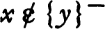 or 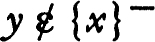. We will define T2 and T3-spaces later. The terminology is due to Alexandroff and Hopf [1].
E KURATOWSKI CLOSURE AND COMPLEMENT PROBLEM
If A is a subset of a topological space, then at most 14 sets can be constructed from A by complementation and closure. There is a subset of the real numbers (with the usual topology) from which 14 different sets can be so constructed. (First notice that if A is the closure of an open set, then A is the closure of the interior of A; that is, for such sets A = A′–′– where′ denotes complementation.)
F EXERCISE ON SPACES WITH A COUNTABLE BASE
If the topology of a space has a countable base, then each base contains a countable subfamily which is also a base.
G EXERCISE ON DENSE SETS
If A is dense in a topological space and U is open, then U ⊂ {A ∩ U)–.
H ACCUMULATION POINTS
Let X be a space, each subspace of which is Lindelöf, let A be an uncountable subset, and let B be the subset consisting of all points x of A such that each neighborhood of x contains uncountably many points of A. Then A ~ B is countable, and consequently each neighborhood of a point of B contains uncountably many points of B.
Note The accumulation points of a set A may be classified according to the least cardinal number of the intersection of A and a neighborhood of the point. If there is also a cardinal number restriction on a base for the topology then several inequalities result. Theorems 1.13, 1.14, and 1.15 all have generalizations applying to spaces with a base of a given cardinal.
I THE ORDER TOPOLOGY
Let X be a set, linearly ordered by a relation < which is anti-symmetric (it is false that x < x). The order topology (the < order topology) has a subbase consisting of all sets of the form: {x: x < a} or {x: a < x} for some a in X.
(a) The order topology for X is the smallest topology in which order is continuous, in the following sense: if a and b are members of X and a < b, then there are neighborhoods U of a and V of b such that, whenever x ε U and y ε V, then x < y.
(b) Let Y be a subset of a set X which is linearly ordered by <. Then Y is linearly ordered by <, but the < order topology for Y may not be the relativized < order topology for X.
(c) If X, with the order topology, is connected, then X is order-complete (that is, each non-void set with an upper bound has a supremum).
(d) If there are points a and b in X such that a < b and there is no point c such that a < c < b, then X is not connected. Such an ordering is said to have a gap. Show that X is connected relative to the order topology iff X is order-complete and there are no gaps.
J PROPERTIES OF THE REAL NUMBERS
Let R be the set of real numbers with the usual topology.
(a) An additive subgroup of the reals which contains more than one member is either dense in R or has a smallest positive element. In particular, the set of rational numbers is dense in R.
(b) The usual topology for the reals is identical with the order topology. The usual topology has a countable base.
(c) A closed subgroup of R is either countable or identical with R. A connected subgroup is either {0} or R and an open subgroup is necessarily identical with R.
(d) (A. P. Morse) A proper interval is a half-open, open, or closed interval which contains more than one point. If  is an arbitrary family of proper intervals, then there is a countable subfamily
is an arbitrary family of proper intervals, then there is a countable subfamily  of
of  such that 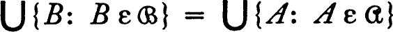. (Observe that a disjoint family of proper intervals is countable, and show that all but a countable number of points of are interior points of members of
such that 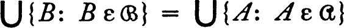. (Observe that a disjoint family of proper intervals is countable, and show that all but a countable number of points of are interior points of members of  .)
.)
(e) The family  of all proper intervals is a subbase for the discrete topology
of all proper intervals is a subbase for the discrete topology  for R. The space 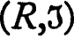 is not a Lindelöf space, although every cover by members of
for R. The space 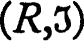 is not a Lindelöf space, although every cover by members of  has a countable subcover. (Contrast with the Alexander theorem 5.6.)
has a countable subcover. (Contrast with the Alexander theorem 5.6.)
Note Further properties of the real numbers are stated in the next problem.
K HALF-OPEN INTERVAL SPACE
Let X be the set of real numbers and let  be the topology for X which has for a base the family
be the topology for X which has for a base the family  of all half-open intervals [a, b) = {x: a ≦ x < b] where a and b are real numbers. A
of all half-open intervals [a, b) = {x: a ≦ x < b] where a and b are real numbers. A  -accumulation point of a set is called an accumulation point from the right, and accumulation points from the left are similarly defined.
-accumulation point of a set is called an accumulation point from the right, and accumulation points from the left are similarly defined.
(a) Members of the base  are both open and closed. The space
are both open and closed. The space  is not connected.
is not connected.
(b) The space  is separable but
is separable but  has no countable base. (For every x in X each base must contain a set whose infimum is x.)
has no countable base. (For every x in X each base must contain a set whose infimum is x.)
(c) Each subspace of  is a Lindelöf space. (See 1. J(d).)
is a Lindelöf space. (See 1. J(d).)
(d) If A is a set of real numbers then the set of all points of A which are not accumulation points from the right is countable. More generally, the set of points of A which are not accumulation points from both the right and the left is countable. (See 1.H.)
(e) Every subspace of  is separable.
is separable.
L HALF-OPEN RECTANGLE SPACE
Let Y be X × X, where X is the space of the preceding problem, and let  be the topology which has as a base the family of all A × B, where A and B are members of the topology
be the topology which has as a base the family of all A × B, where A and B are members of the topology  of the preceding example.
of the preceding example.
(a) The space  is separable.
is separable.
(b) The space  contains a subspace which is not separable. (For example, {(x,y) : x + y = 1}.)
contains a subspace which is not separable. (For example, {(x,y) : x + y = 1}.)
(c) The space  is not a Lindelöf space. (If each open cover of Y has a countable subcover, then every closed subspace has the same property. Consider {(x,y) : x + y = 1}.)
is not a Lindelöf space. (If each open cover of Y has a countable subcover, then every closed subspace has the same property. Consider {(x,y) : x + y = 1}.)
Note The spaces described in 1.K and 1.L are among the stock counter-examples of general topology. We enumerate other pathological features in 4.I. P. R. Halmos first observed that the product (in a sense to be made specific in chapter 3) of Lindelöf spaces may fail to be a Lindelöf space.
M EXAMPLE (THE ORDINALS) ON 1ST AND 2ND COUNTABILITY
Let Ω′ be the set of all ordinals less than or equal to the first uncountable ordinal Ω, let X be Ω′ ~ {Ω}, and let ω be the set of all non-negative integers, each with the order topology.
(a) ω is discrete and satisfies the 2nd axiom of countability.
(b) X satisfies the first but not the second axiom of countability.
(c) Ω′ satisfies neither axiom of countability; if U is a separable sub-space of Ω′, then U is itself countable.
N COUNTABLE CHAIN CONDITION
A topological space satisfies the countable chain condition iff each disjoint family of open sets is countable. A separable space satisfies the countable chain condition, but not conversely. (Consider an uncountable set with the topology consisting of the void set and the complements of countable sets.) There are more complicated examples (see the Helly space of 5.M) which satisfy the first countability axiom and are separable, but fail to satisfy the second axiom of countability.
O THE EUCLIDEAN PLANE
The Euclidean plane is the set of all pairs of real numbers and the usual topology for the plane has a base which consists of all cartesian products A × B where A and B are open intervals with rational end-points. This base is countable and the plane is consequently separable.
(a) The usual topology of the plane has a base which consists of all open discs, {{x, y): (x – a)2 + (y –b)2 < r2}, where a, b, and r are rational numbers.
(b) Let X be the set of all points in the plane with at least one irrational coordinate, and let X have the relative topology. Then X is connected.
P EXAMPLE ON COMPONENTS
Let X be the following subset of the Euclidean plane, with the usual topology relativized. For each positive integer n let An = [1/n] × [0,1], where [0,1] is the closed interval, and let X be the union of the sets An, with (0,0) and (0,1) adjoined. Then {(0,0)} and {(0,1)} are components of X, but each open and closed subset of X contains neither or both of the points.
Q THEOREM ON SEPARATED SETS
If X is a connected topological space, Y is a connected subset and X ~Y = A ∪ B, where A and B are separated, then A ∪ Y is connected.
R FINITE CHAIN THEOREM FOR CONNECTED SETS
Let  be a family of connected subsets of a topological space satisfying the condition: if A and B belong to
be a family of connected subsets of a topological space satisfying the condition: if A and B belong to  , then there is a finite
sequence A0, A1, … An, of members of
, then there is a finite
sequence A0, A1, … An, of members of  such that A0 = A, An = B, and, for each i, the sets Ai and Ai+1 are not separated. Then is connected. From this fact deduce 1.21.
such that A0 = A, An = B, and, for each i, the sets Ai and Ai+1 are not separated. Then is connected. From this fact deduce 1.21.
S LOCALLY CONNECTED SPACES
A topological space is locally connected iff for each point x and each neighborhood U of x the component of U to which x belongs is a neighborhood of x.
(a) Each component of an open subset of a locally connected space is open.
(b) A topological space is locally connected iff the family of open connected subsets is a base for the topology.
(c) If points x and y of a locally connected space X belong to different components, then there are separated subsets A and B of X such that x ε A, y ε B, and X = A ∪ B.
Note For many other properties of locally connected spaces and for generalizations, see G. T. Whyburn [1] and R. L. Wilder [1].
T THE BROUWER REDUCTION THEOREM
The usual statement of the theorem is as follows. Let X be a topological space satisfying the second axiom of countability. A property P of subsets of X is called inductive iff whenever each member of a countable nest of closed sets has P, then the intersection has P. A set A is irreducible with respect to P iff no proper closed subset of A has P. Then: If a closed subset A of X possesses an inductive property P, there is an irreducible closed subset of A which possesses P.
The theorem can be stated more formally in terms of a family of sets (the family of all sets possessing P).
(a) State and prove the theorem in this form. Assume that the topological space is such that every subspace is a Lindelöf space.
(b) If  is an arbitrary topological space can any result of this general sort be affirmed? (See 0.25.)
is an arbitrary topological space can any result of this general sort be affirmed? (See 0.25.)
* An amusing and instructive problem suggests itself. From a given subset A of a topological space, how many different sets can be constructed by successive applications, in any order, of closure, complementation and interior? From the remarks in the above paragraph and the fact that A–– = A–, this reduces to: how many distinct sets may be formed from a single set A, by alternate applications of complementation and the closure operator? The surprising answer is given in problem 1.E.